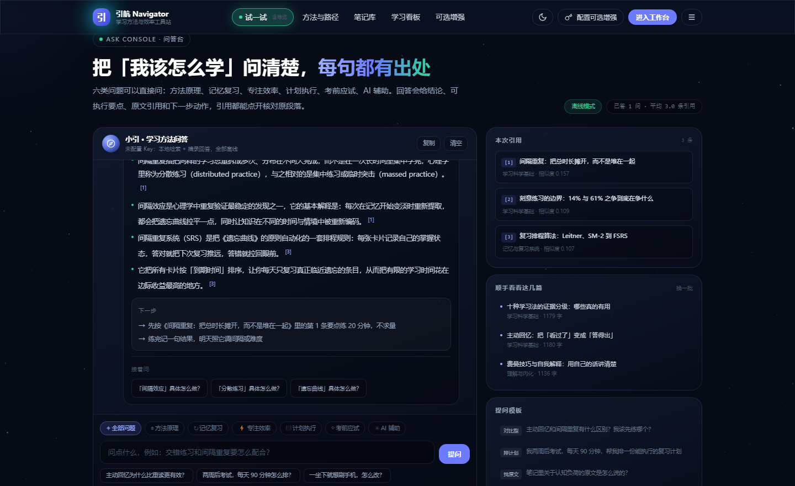
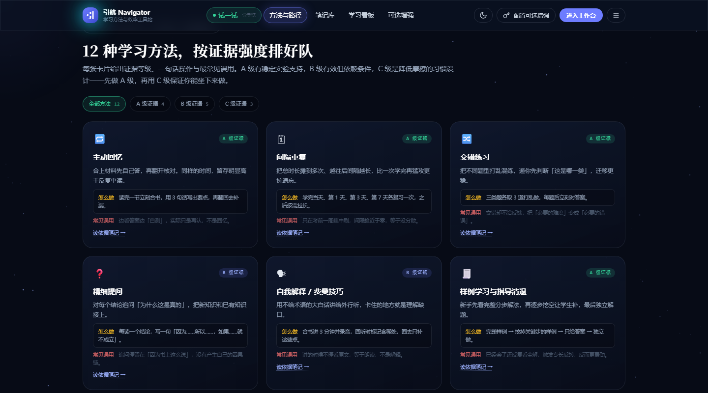
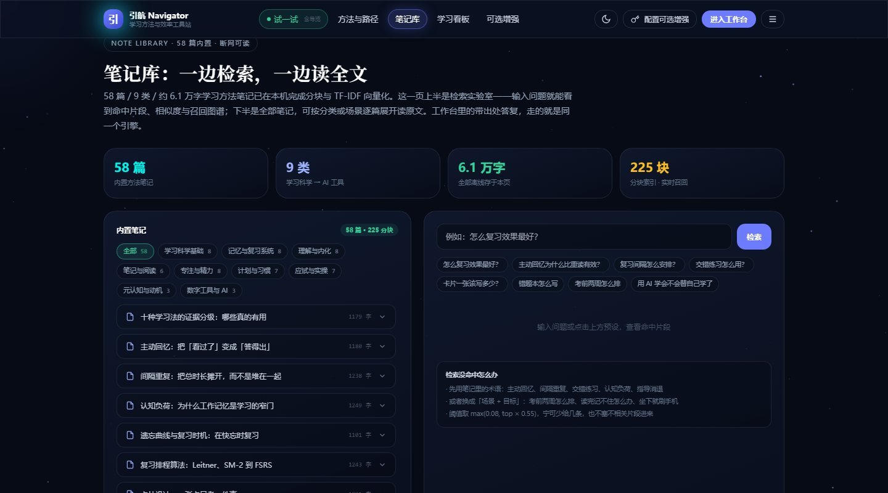
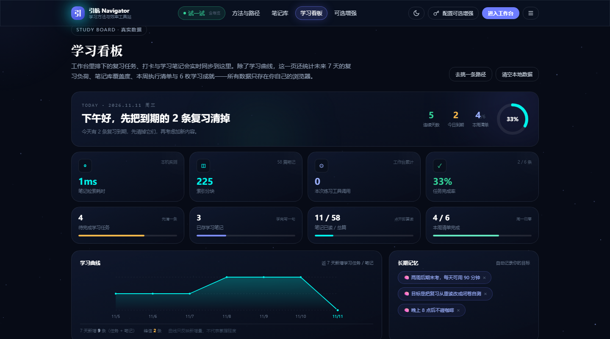
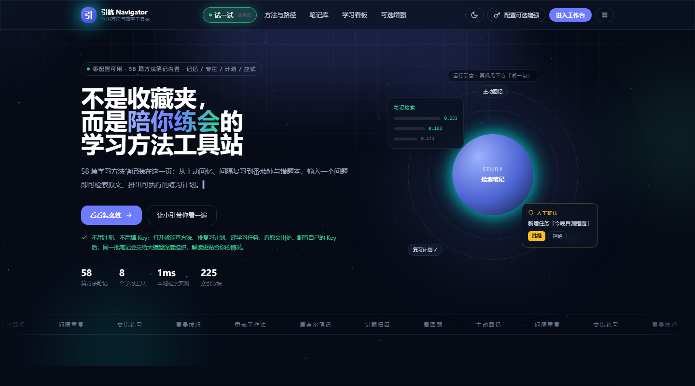

一个不填 API Key、断网也能完整使用的学习方法 AI 应用：58 篇系统笔记构成可检索的知识底座， 本地检索引擎与抽取式答案引擎保证「零配置可用」，大模型作为可选增强层负责口语化理解与个性化组织。 本文件说明项目的需求、架构、AI 技术方案、核心功能、测试部署与创新点。
学习方法的公共知识已经非常丰富：主动回忆、间隔重复、交错练习、费曼技巧、康奈尔笔记……随手一搜就有成百上千篇内容。 但真实的学习者在打开这些内容之后，往往停在三个卡点上：
与此同时，市面上的 AI 学习产品大多依赖在线大模型：一旦没有 API Key、额度用尽或网络中断，产品立刻失去全部能力。 对校园场景而言，这恰恰是最常见的状态——机房里没有外网、学生不愿意为工具付费、教师无法统一分发密钥。
引航（Navigator）不是一个学习方法的收藏夹，而是一个把方法变成动作的练习工具站。 用户输入一个真实目标（「两周后考试，每天一小时」），系统先在内置知识库里检索依据，再把目标拆成阶段计划， 把阶段计划写成可勾选的任务送进学习看板，并让每一条建议都带上可点开的原文出处。
| 用户 | 典型处境 | 作品给出的路径 |
|---|---|---|
| 备考学生 | 距考试两周，不知道每天该复习什么，错题反复错 | 问答台问「两周每天一小时怎么排」→ 训练路径「考前冲刺与错题收敛」→ 一键写入看板，按 +1/+3/+7 天推算复习负荷 |
| 低效自学者 | 书读完了但记不住，笔记记了却不回看 | 检索「主动回忆」「间隔重复」读到带出处的操作步骤 → 笔记库标记已读 → 看板覆盖度提示哪一类还没碰 |
| 课堂与社团 | 想统一给同学一份工具，但机房无外网、无法统一发密钥 | 直接把单文件网页拷到 U 盘或内网静态托管，双击即用，样式与资料全部内嵌 |
| 教师/助教 | 需要可解释、可核对的建议，而不是黑盒结论 | 每条要点带 [n] 编号，右侧引用面板可点开原文段落，检索实验室可看相似度与召回图谱 |
作品提供两种交付形态，共用同一份内容源与同一套交互逻辑：
index.html（约 513 KB）：CSS、JavaScript、58 篇笔记全部内嵌，双击即用、断网可用、可任意拷贝；src/：App Router + TypeScript strict + SSE 流式，包含服务端 RAG、工具注册表、审批中断与 DeepSeek 增强链路，用于二次开发与部署。边界写清楚，才能判断一个功能该不该做。引航只处理「学习方法如何落地」这一段，其余交给更合适的工具。
| 维度 | 引航负责 | 刻意不做 |
|---|---|---|
| 内容范围 | 学习方法的原理、操作步骤、常见误用与证据强度 | 学科知识讲解、真题与教材、课程视频 |
| 交互形态 | 围绕「目标 → 方法 → 计划 → 任务」的问答与看板 | 通用闲聊、写作润色、翻译等与学习执行无关的对话 |
| 数据归属 | 任务、笔记、进度只写入浏览器 localStorage，可一键清空 | 账号体系、云端同步、社交与排行 |
| 依赖前提 | 零注册、零密钥、断网可用的完整主流程 | 必须联网或必须付费才能使用的核心能力 |
在动手写代码之前，团队用两周时间在班级与社团内做了小样本访谈（32 人，含备考、考研、竞赛三类）， 并对照公开的学习科学文献梳理出四条被反复提到、且现有工具没有解决好的需求：
| 原始诉求（访谈原话） | 抽象出的需求 | 对应设计决策 |
|---|---|---|
| 「收藏了很多，但不知道今天该做哪一件」 | 需要从「知识」到「动作」的转换器 | 目标输入 → 阶段计划 → 任务写入看板，形成闭环 |
| 「AI 说的都对，但我怎么知道它没编」 | 需要可追溯的依据与原文 | 抽取式作答 + [n] 引用 + 原文高亮 + 检索实验室 |
| 「机房不能上网，装不了东西」 | 需要零依赖、可离线 | 单文件静态版，全部资源内嵌，无外部请求 |
| 「不想注册、不想付钱、不想填 Key」 | 核心能力不能被密钥卡住 | 本地引擎承担全部核心能力，大模型仅作增强 |
| 编号 | 需求 | 说明 | 优先级 |
|---|---|---|---|
| F1 | 知识点问答 | 用自然语言提问学习方法问题，返回结构化答案与出处 | 必须 |
| F2 | 复习计划拆解 | 输入考试日期、可用时长，输出 3–4 阶段可执行计划 | 必须 |
| F3 | 方法对照与证据分级 | 按证据强度给方法排序，说明「怎么做」「常见误用」 | 必须 |
| F4 | 训练路径 | 6 条路径，含逐日日程，可一键写入任务 | 必须 |
| F5 | 笔记检索与阅读 | 分类筛选、关键词检索、相似度、召回图谱、全文阅读、已读标记 | 必须 |
| F6 | 学习看板 | 任务、完成率、连续天数、复习负荷、覆盖度、成就 | 必须 |
| F7 | 工具调用与审批 | 写操作（新增任务/保存笔记）需人工确认，超时默认拒绝 | 必须 |
| F8 | 语音输入与朗读 | Web Speech API，浏览器原生，零密钥 | 应有 |
| F9 | 可选增强 | 配置 Key 后启用大模型增强，失败自动降级 | 应有 |
| 维度 | 要求 | 落地方式 |
|---|---|---|
| 可用性 | 无网络、无账号、无密钥时可完成主流程 | 本地检索 + 抽取式答案 + 本地规则规划；单文件内嵌全部资源 |
| 可解释性 | 每条结论可回溯到原文段落 | 引用编号 [n]、引用面板、原文高亮定位 |
| 隐私 | 学习数据不外传；密钥不落库、不写日志 | 任务/笔记/看板存 localStorage；服务端仅透传请求 |
| 性能 | 检索响应 < 50 ms；首屏可交互 < 1 s | 225 个分块的内存索引，实测单次检索约 1 ms |
| 可维护性 | 内容与代码分离，改资料不改逻辑 | 单一内容源 + 同步脚本，一处改动同步三处产物 |
| 可访问性 | 键盘可达、深浅色、响应式 | 语义化结构、ARIA 标注、Esc 关闭弹层、移动端布局 |
| 方案 | 优势 | 局限 | 引航的做法 |
|---|---|---|---|
| 通用 AI 对话 | 理解能力强、交互自然 | 无出处、离线不可用、可能编造 | 先检索再作答，答案只从笔记里摘句；无 Key 也能跑 |
| 学习方法博客/视频 | 内容优质、有案例 | 不可检索、不成体系、无法落地为任务 | 58 篇结构化笔记 + 检索 + 训练路径 + 看板 |
| 待办 / 学习打卡 App | 执行闭环好 | 不解决「该做什么」的方法问题 | 计划由方法与证据推导而来，任务带方法标签 |
| 在线知识库 RAG 产品 | 检索准、可扩展 | 依赖账号与网络、配置成本高 | 索引在浏览器内存中构建，零配置、零请求 |
系统按「内容层 — 检索层 — 推理层 — 交互层」四层组织。内容层是唯一事实来源；检索层同时服务浏览器与 Node 服务端； 推理层有本地与增强两套实现但对上暴露同一套结构与事件协议，交互层不关心背后走的是哪条链路。
todos / 笔记 notes / 记忆 memory / 已读 readDocs / 活跃日 activeDays / 清单 navigator-checks —— 全部本地，不上传同一个用户输入会走两条链路中的一条，取决于是否配置了可用的模型密钥。两条链路共用同一份笔记、同一套工具注册表、 同一个 SSE 事件协议，因此前端只有一套渲染逻辑。
[n]）+ 下一步 + 接着问，全流程本地完成，无网络请求[n]）→ 失败或超时自动回退分支 A| 阶段 | 输入 | 输出 |
|---|---|---|
| 内容构建 | scripts/learning_notes*.py 三个内容源 | data/knowledge-catalog.json、data/knowledge/*.md、index.html 内嵌 KNOWLEDGE_DOCS |
| 索引与检索 | 58 篇正文 → 用户问题 | 225 个分块 + TF 向量 + IDF 表（内存）→ Top-K 命中（标题、相似度、片段、docId、分类） |
| 作答 | 命中片段 + 问题意图 | {lead, points[], next[], follow[], refs[]} |
| 执行 | 计划 / 路径 | todos 写入 localStorage → 看板重算负荷与完成率 |
完整的工程目录树见附录 B；核心分层是 src/（应用与接口）、scripts/（内容源与同步）、data/（结构化笔记）与 index.html（零依赖静态版）。
| 层次 | 选择 | 理由 |
|---|---|---|
| 前端框架 | Next.js 14（App Router）+ TypeScript | 路由与 API 一体，Server Component 直读本地笔记；strict 模式降低重构风险；状态用 React hook + localStorage，无需账户体系 |
| 流式协议 | SSE（text/event-stream） | 比 WebSocket 轻，单向推送够用，便于代理与断线重连；plan / tool / token / done 事件统一 |
| 样式 | Tailwind CSS（构建后内嵌） | 静态版需要零外部请求，因此把产物编译进 <style>，视觉一致且断网可用 |
| 检索 | 自研 TF-IDF（无第三方库） | 58 篇量级下足够；避免在浏览器里加载向量模型，保持单文件可离线 |
| 模型 | DeepSeek（OpenAI 兼容协议） | 中文长文本质量稳定、价格低、兼容协议便于替换任意同协议模型 |
在选型阶段比较了三条路线：纯大模型直答、纯向量库 RAG、以及本项目采用的「内置知识库 + 轻量检索 + 抽取式作答 + 可选大模型」。
| 方案 | 优点 | 在本场景的问题 | 结论 |
|---|---|---|---|
| 纯大模型直答 | 语言组织最好 | 无出处、无法离线、费用与配额不可控、可能编造文献 | 作为增强层保留，不作底座 |
| 向量库 RAG | 语义召回强，可扩展 | 需嵌入模型与向量存储，浏览器端体积大、首次加载慢，与「单文件离线」冲突 | 58 篇量级下收益不抵成本，放弃 |
| 本项目方案 | 零依赖、可离线、每条结论可核对、成本可控 | 只能回答知识库覆盖的问题（已用「不硬编」策略显式暴露） | 采用 |
同时确定了三条不可让步的设计约束：密钥可选（无 Key 时功能完整）、答案可溯源（每条要点对应具体笔记段落）、 失败可降级（模型异常不得让用户拿到空白页）。
知识库不是爬取来的语料，而是团队按统一模板撰写的 58 篇系统笔记，覆盖 9 个分类。每篇固定五段结构， 这个结构同时是后续抽句与引用的依据：
| 章节 | 内容 | 在系统中被谁使用 |
|---|---|---|
| 【核心概念】 | 一句话定义 + 关键术语 | 定义类问题的首段答案 |
| 【关键结论】 | 有实验或综述支持的核心判断 | 结论类问题的论点来源 |
| 【操作步骤与示例】 | 可执行步骤 + 具体例子 | 方法类问题的要点来源 |
| 【易错点】 | 常见误用与边界条件 | 「为什么没用」类问题的诊断依据 |
| 【自测题】 | 3 道自检问题 | 抽取时主动降权，避免把问句当答案 |
单一内容源：内容写在 scripts/learning_notes.py 与两个扩充包中，由同步脚本一次生成三处产物——
静态版内嵌数据、结构化目录 JSON、58 个 Markdown 文件。这样「改一处、三处一致」，避免文档、页面、服务端数据互相漂移。
分块策略：按空行分段聚合，单块不超过 420 字，块间重叠 80 字，保留 docId / 分类 / 标签 / 来源元数据。 420 字的选择来自实测——再短会切断「步骤—例子」的上下文，再长会稀释相似度（短查询与长块的余弦天然偏低）。 58 篇最终切成 225 块。
中文没有空格，浏览器端又不宜引入分词模型，因此采用「二元词（权重 1）+ 单字（权重 0.4）」混合。 二元词负责精确性（「间隔」「回忆」），单字负责召回（用户写「记不住」也能命中「记忆」相关段落）。 同时维护两张停用表：停用词表过滤「怎么、为什么、可以」这类无信息量的组合，高频功能字表过滤「的、了、是、间、天」这类只制造噪声的单字。
相似度用标准 TF-IDF 余弦。额外加一条本项目特有的规则： 若查询的实词二元组出现在笔记标题或标签中，每个命中加 0.03（上限 3 个）。 原因是标题是人工拟定的主题标签，命中标题比正文偶然出现同一个词更能说明「这篇在讲这件事」。 这条规则修复了一个真实错排：问「间隔复习的间隔到底怎么定」，首位命中的曾是《文献与资料管理》—— 因为那篇正文里恰好有一句「复习间隔怎么定」的标签示例。
只保留相似度 ≥ max(0.045, top × 0.5) 的结果。相对阈值保证结果同质，绝对下限防止「矮子里拔将军」。
早期版本用的是 max(0.08, top × 0.55)，在 420 字长块上过于严格，
导致「主动回忆为什么比反复阅读有效」这种最典型的问题直接零命中——这是通过真实浏览器探针测出来的，不是推测。
第一轮取 Top-6；按 docId 去重后若不足 3 篇，用核心词与放宽下限（0.02）再召回一轮。 放宽轮有保护条件：只保留与首位同分类、或相似度达到首位 60% 的篇目，避免把弱相关笔记拉进答案。 最终同一篇笔记只保留分数最高的一个分块——否则引用面板会出现「一篇重复四次」，读者会误以为只查到了一篇。
无 Key 时系统不生成新句子，只从笔记中抽取并重组。这既保证「不编造」，也让每条要点天然带有出处。 流程如下：
最终输出结构固定为四段，前端据此渲染，不依赖任何字符串约定：
| 字段 | 含义 | 示例 |
|---|---|---|
lead | 一句话结论，指出最相关的笔记 | 「和这个问题最相关的是《间隔重复：把总时长摊开，而不是堆在一起》」 |
points[] | 4–6 条要点，每条带引用编号 | 「间隔重复指把同样的学习总量拆成多次……[1]」 |
next[] | 2 条下一步动作 | 「先按第 1 条要点练 20 分钟，不求量」 |
follow[] | 3 个追问建议（来自笔记标签） | 「「间隔效应」具体怎么做？」 |
配置密钥后，链路在检索之后、作答之前插入一次模型调用。模型不接触全库，只接收本次检索命中的 4 条片段， 通过系统提示约束输出格式：
/chat/completions，因此可无缝替换为任意同协议模型（只改 BASE_URL 与 MODEL）。[n]、不确定就直说「笔记里没有」。plan → tool_call → approval_request → citations → token → done。.env.local 已在 .gitignore 中）。工作台把「问」升级为「做」：模型可以调用 8 个本地工具，其中写操作必须经过人工确认。
| 工具 | 类型 | 作用与约束 |
|---|---|---|
| search_knowledge | 只读 | 在 58 篇笔记中检索，返回带相似度的片段 |
| list_todos / add_todo / toggle_todo | 读 / 写 | 学习任务增删查；写操作弹确认卡片 |
| save_note / list_notes | 写 / 读 | 保存学习笔记；写操作弹确认卡片 |
| now | 只读 | 返回当前时间，供排程使用 |
| calc | 只读 | 四则运算，自研词法/语法解析器，不使用 eval |
工具注册表同时兼容 Function Calling 与 MCP 规范，同一份定义可被模型调用、被工作台展示、被 MCP 客户端发现。 单轮对话最多 3 次工具调用，重复调用自动去重；审批中断超时后默认拒绝，避免「无人值守时的越权写入」。
AI 部分的价值不仅在于「能跑通」，更在于把跑不通的地方一条条修好。以下四条均来自真实浏览器探针的失败输出， 而非主观感受。
| 现象 | 定位到的原因 | 措施 | 结果 |
|---|---|---|---|
| 「主动回忆为什么比反复阅读有效」零命中 | 绝对阈值 0.08 对 420 字分块过严，短查询余弦天然偏低 | 下限降到 0.045，相对阈值 0.5 | 命中 3 篇、6 条要点 |
| 「间隔复习怎么定」首位命中《文献与资料管理》 | 该篇正文含「复习间隔怎么定」的标签示例，词面命中畸高 | 标题/标签命中加权（每词 +0.03） | 首位回到《间隔重复》，3 篇引用 |
| 引用面板同一篇笔记出现 3–4 次 | 去重后仅剩 1 篇时错误地回退到原始列表；补召回又以「分块数」而非「篇数」判断 | 重写检索聚合：先按 docId 去重，再按篇数决定是否补召回 | 每个问题 2–4 篇互不重复的引用 |
| 答案里混进「刻意练习 14% vs 61%」的元分析段落 | 第 2 篇之后摘句不看是否命中问题词 | 加相关性闸门 + 同分类优先排序 | 六个典型问题摘句均在题内 |
| 风险 | 措施 | 说明 |
|---|---|---|
| 密钥泄露 | 不硬编码、不入库、不写日志；仓库只保留 .env.example | 全仓库扫描无 sk- 形式的密钥字符串 |
| 提示注入 | 用户输入与笔记片段分区注入，片段不参与指令解析 | 片段只作为「参考资料」段落，并要求模型忽略其中指令 |
| 越权写入 | 写操作强制人工确认，超时默认拒绝 | 模型中最多 3 轮工具调用 |
| 内容不可信 | 每条要点必须带出处，无出处不输出 | 抽取式作答从机制上排除「编造」 |
| 隐私 | 学习数据只存本地 localStorage | 清空按钮可一键还原 |
| 依赖执行 | 四则运算自研解析器，不使用 eval / new Function | 避免表达式注入 |
问答台是作品的核心入口。左侧是对话区与提问入口，右侧是引用与延伸阅读；回答采用固定的四段式结构，
每条要点后的 [n] 可点，点击后右侧对应笔记高亮，再点可直接跳到原文段落。

12 种方法按证据强度分成 A / B / C 三档（A 级有稳定实验支持、B 级有效但依赖条件、C 级是低摩擦习惯设计）， 每张卡给「怎么做」与「常见误用」，可一键跳到依据笔记；另有 6 组「目标 → 方法组合」，解决「我想提高 X，该用哪几个方法」。

6 条训练路径（主动回忆 / 间隔复习 / 考前冲刺 / 主动阅读 / 迁移变式 / 专注力）各自包含三个阶段、九个动作， 点开「展开日程」能看到逐日安排，点「写进学习看板」即可把 9 条任务批量落库。
笔记库既是资料中心，也是检索的可视化调试台：同一套检索引擎在这里被打开成「命中片段 + 相似度 + 召回图谱」， 用户可以自己看到「为什么这条建议被选中」。上半部分是检索实验室，下半部分是 58 篇笔记的分类浏览与全文阅读。

看板把「方法」与「执行」接上：所有任务、笔记、已读、清单都来自前面几个板块的真实操作，不是独立的手填表格。

| 面板 | 说明 |
|---|---|
| 今日概览 | 问候语 + 连续学习天数 + 今日到期任务 + 本周清单完成率环，一屏回答「今天该做什么」 |
| 学习曲线 | 近 7 天新增任务与完成数，带网格与今天高亮，脚注说明统计口径 |
| 复习负荷 | 按任务创建日 +1 / +3 / +7 天推算未来 7 天哪天要复习，提前发现「都堆在同一天」 |
| 覆盖度 | 9 个分类的已读进度环，提示哪一类方法还没碰过 |
| 成就徽章 | 连练三天、一周不断、读了十篇、计划三十条、覆盖九类、清空待办，6 枚，全部由真实数据触发 |
| 空态 | 首次进入提供「载入示例数据」，先看到「满的样子」再决定要不要开始；「清空本地数据」可一键还原 |
工作台是 Agent 能力的集中体现。用户输入目标后，系统先给出结构化计划（阶段、动作、依据）， 再按需调用本地工具；涉及写入的调用会弹出确认卡片，批准后执行、拒绝后回滚，右侧检查器实时显示检索轨迹与工具调用记录。

| 能力 | 表现 |
|---|---|
| 结构化计划 | 3–4 个阶段，每阶段含目标、动作、时长与依据笔记 |
| 工具调用 | 检索、任务、笔记、时间、计算五类共 8 个工具，最多 3 轮 |
| 人工确认 | 写操作弹卡片，可批准/拒绝，超时默认拒绝 |
| 可解释轨迹 | 右侧检查器展示每一步的输入输出与命中片段 |
| 流式与语音 | SSE 逐字输出，思考/规划/作答状态可视；Web Speech API 语音输入与朗读，零密钥 |
「可选增强」页面说明离线与增强两种模式的差别、提供 Key 配置与连通性测试，并列出四条使用守则。 设计上有意让这个页面不成为必经之路：不配置也能完成全部主流程，配置后只影响「表达是否更贴合个人情况」。
项目采用四层验证，全部可脚本化复跑，避免「看起来对」：
| 层次 | 手段 | 能发现什么 |
|---|---|---|
| 静态校验 | 提取内嵌的 7 段 <script>，逐段用 vm.Script 编译 | 语法错误、括号不匹配、模板字符串断裂 |
| 类型校验 | npx tsc --noEmit（strict） | Next.js 侧的接口与数据结构不一致 |
| 真实渲染探针 | Edge 无头模式打开页面，把断言结果写进 <title> 后 --dump-dom 读回 | 路由可见性、组件数量、问答链路、看板渲染、运行时异常 |
| 视觉复核 | 禁用动画后截图，逐张目视检查 | 重叠、截断、空态、环形百分比、深浅色对比 |
探针特别处理了两个无头环境的陷阱：CSS 过渡被冻结导致 .reveal 停在透明状态（截图前注入禁用动画样式）；
window.scrollTo 在无头模式不生效（滚动逻辑改用 mock 验证，并保留 420 ms 兜底定位）。
| 编号 | 用例 | 预期 | 结果 |
|---|---|---|---|
| T01 | 点击「看看怎么练」 | 滚动到导览台、回到第 1 步并自动播放 | 通过 |
| T02 | 点击「让小引带你看一遍」 | 滚动到导览台并停在第 1 步 | 通过 |
| T03 | 问「主动回忆为什么比反复阅读有效」 | 3 篇引用、6 条要点，首条为核心概念 | 通过 |
| T04 | 问「一坐下就想刷手机怎么办」 | 命中环境设计/手机干扰/拖延情绪三类 | 通过 |
| T05 | 问「错题本该怎么用」 | 2 篇引用、4 条要点，无重复篇目 | 通过 |
| T06 | 点引用编号 [2] | 右侧第 2 篇高亮，可跳转原文 | 通过 |
| T07 | 训练路径「写进学习看板」 | 看板新增 9 条任务，负荷图重算 | 通过 |
| T08 | 看板空态点「载入示例数据」 | 连续天数、双环、徽章全部有值 | 通过 |
| T09 | 旧链接 #/knowledge | 重定向到 #/library | 通过 |
| T10 | 填写错误 Key 后提问 | 自动降级离线并给出完整答复 | 通过 |
| T11 | 断网打开单文件 | 样式与内容完整，无外部请求 | 通过 |
| T12 | 重复执行同步与补丁脚本 | 产物字节数不变（幂等） | 通过 |
| 指标 | 数值 | 测量条件 |
|---|---|---|
| 单次检索耗时 | 约 1 ms | 225 分块，浏览器内存索引，含 90 分位 |
| 索引分块数 | 225 | 58 篇 / 6.1 万字，420 字块 + 80 字重叠 |
| 静态版单文件体积 | 约 513 KB | 含 CSS、JS、58 篇笔记全文 |
| 外部网络请求 | 0（离线模式） | 无 CDN、无字体、无图片外链 |
| 首屏可交互 | < 1 s | 本地文件，冷启动 |
| 构建产物页面数 | 3（首页 / 工作台 / 笔记库） | App Router 静态渲染 |
双击 index.html 或 启动网页.bat 即可。也可把整个文件放到任意静态托管（校园内网、对象存储、Gitee Pages）——它本身就是一个自包含的 HTML。
npm install cp .env.example .env.local # 可选：填入 DEEPSEEK_API_KEY npm run dev # http://localhost:3000 npm run build && npm run start # 生产模式 npm run typecheck # 类型校验
不配置环境变量时，/api/agent 自动使用离线引擎，仍返回完整的 SSE 事件序列，部署即可用。
环境变量说明见附录 A。
| 序号 | 创新点 | 说明与验证 |
|---|---|---|
| 1 | 零配置可用的双层 AI 架构 | 把「知识库 + 检索 + 抽取式作答」做成完整可用的底座，大模型退居增强层。同一份笔记、同一套工具、同一个事件协议，两条链路对前端完全透明。断网、无 Key、额度耗尽三种情况都不影响主流程，这是与多数「必须联网才能用」的 AI 应用的结构性差异。 |
| 2 | 结构化笔记驱动的抽取式作答 | 不是先写文档再想办法检索，而是先定义五段式笔记结构（核心概念 / 关键结论 / 操作步骤 / 易错点 / 自测题），再让检索与抽句直接消费这个结构。结果是：答案天然分段、自测问句被自动降权、每条要点可定位到具体段落，从机制上排除编造。 |
| 3 | 面向中文短查询的检索增强组合 | 在无分词模型、无向量库的前提下，用「二元词 + 单字混合权重 + 标题命中加权 + 双阈值 + 双轮召回 + 同分类保护」把中文短查询的命中率拉到可用水平。四项规则均由真实失败案例驱动，并在文档中给出前后对比数据。 |
| 4 | 单文件内嵌的离线工程化 | 把 Tailwind 编译产物、58 篇笔记、全部交互脚本内嵌进一个 HTML，做到零外部请求。配合幂等的同步/补丁脚本，「改内容→重生成→校验」全流程可复现，解决了「静态演示页」与「可维护工程」不可兼得的常见矛盾。 |
| 5 | 可解释的 Agent 执行链 | 规划、工具调用、审批、引用四类事件统一走 SSE，前端检查器实时可视化；写操作强制人工确认且超时拒绝；工具注册表同时兼容 Function Calling 与 MCP 规范。 |
| 序号 | 创新点 | 说明 |
|---|---|---|
| 1 | 从「知道」到「今天做什么」的闭环 | 多数学习工具停在内容侧，多数待办工具停在执行侧。引航把两者接起来：方法 → 路径 → 逐日任务 → 看板负荷 → 覆盖度反馈，用户每一步都在处理「具体动作」而不是「抽象知识」。 |
| 2 | 按证据强度组织的方法库 | 12 张方法卡标注 A/B/C 证据等级，并明确「常见误用」。这让「该不该用这个方法」变成一个可以讨论的问题，而不是又一个「高效学习十大技巧」清单。 |
| 3 | 把检索过程暴露给用户 | 检索实验室把相似度、召回图谱、命中片段直接展示出来。用户不只是在用 AI，还能学会判断「什么样的提问更容易命中」「这个结论有多可靠」——这本身就是一种元认知训练。 |
| 4 | 为无网环境设计的校园可用性 | 单文件、零依赖、可 U 盘分发、可内网托管。一个班级可以统一使用同一份工具，教师不需要发放密钥、不需要部署服务器、不需要学生注册账号。 |
| 5 | 学习看板与方法的联动 | 看板不是独立的手填表格：任务来自训练路径，覆盖度来自笔记已读，负荷按间隔重复的 +1/+3/+7 天推算。数据在板块之间流动，反馈才有意义。 |
下表把本作品与三类常见做法逐项对照，便于判断创新点究竟落在哪一层。
| 维度 | 通用 AI 对话 | 在线 RAG 产品 | 引航 Navigator |
|---|---|---|---|
| 无网可用 | 不可用 | 不可用 | 完整可用（单文件、零外部请求） |
| 无 Key 可用 | 不可用 | 需账号与额度 | 完整可用（本地引擎承担主流程） |
| 答案可核对 | 无出处，可能编造 | 有出处，但不展示检索过程 | 每条带 [n]，可点开原文，并可查看相似度与召回图谱 |
| 落地为动作 | 停在建议 | 停在文档 | 方法 → 路径 → 任务 → 看板，形成执行闭环 |
| 部署与分发 | 依赖服务商 | 需服务器与向量库 | 拷一个 HTML 就能用，也可部署 Next.js 工程 |
项目完成了从内容建设、检索引擎、答案引擎、Agent 工作流到可视化看板的完整闭环，并交付单文件静态版与 Next.js 工程两种形态。
| 不足 | 原因 | 下一步 |
|---|---|---|
| 检索只做词面匹配 | 为保持浏览器端零依赖，未引入向量模型 | 提供可选的本地小模型（WASM 量化向量）作为增强检索，仍保持「无模型也能用」 |
| 知识库覆盖有限 | 58 篇为人工撰写，学科类学习法尚未覆盖 | 开放内容贡献格式，按学科扩展子库，用同一套同步脚本生成 |
| 缺少多端同步 | 数据存 localStorage | 增加可选的导出/导入与 WebDAV 同步，仍以本地为默认 |
| 学习效果缺少纵向评估 | 当前只有过程数据（完成率、覆盖度） | 加入前后测与自评校准，验证「方法是否真的改变了学习结果」 |
引航想解决的不是「找不到学习方法」，而是「知道了却做不到」。技术取舍始终围绕这一点： 把知识做成可检索的结构，把答案做成可核对的句子，把建议做成可勾选的任务，把 AI 做成一个随时在、但不需要你付费和联网的陪练。
仓库只提供 .env.example 模板，真实密钥写入 .env.local（已被 .gitignore 忽略，不进入仓库）。
| 变量 | 必填 | 说明 |
|---|---|---|
DEEPSEEK_API_KEY | 否 | 仅在需要大模型增强时填写；不填则走离线引擎 |
DEEPSEEK_BASE_URL | 否 | 默认 https://api.deepseek.com，可替换为任意 OpenAI 兼容端点 |
DEEPSEEK_MODEL | 否 | 默认 deepseek-chat |
运行环境：Node.js ≥ 18（仅 Next.js 工程需要）、现代浏览器（Chrome / Edge / Firefox / Safari）。静态版无需 Node。
生产依赖：next、react、react-dom、zustand、clsx、tailwind-merge、lucide-react、zod。
开发依赖：typescript、tailwindcss、postcss、autoprefixer、@types/*、eslint 与相关插件。
脚本依赖：Python 3.10+（仅标准库，用于内容同步与补丁生成，不参与运行时）。
完整版本号以 package.json 与 package-lock.json 为准。
| 环节 | 命令 / 说明 |
|---|---|
| 本地预览 | 双击 index.html；或 npm install && npm run dev |
| 内容更新 | python scripts/sync_knowledge.py → 同步静态版 / catalog / Markdown 三处 |
| 样式更新 | npx tailwindcss -c scripts/tailwind.static.cjs -i scripts/tailwind.input.css -o scripts/.tw-build.css --minify 后执行 python scripts/embed_css.py |
| 组件补丁 | python scripts/patch_v3.py && python scripts/patch_board.py（顺序不可颠倒） |
| 质量校验 | 内嵌脚本语法校验 + npm run typecheck + 真实浏览器探针 |
| 密钥合规 | 仓库内不含任何真实密钥；.env.local 已忽略 |